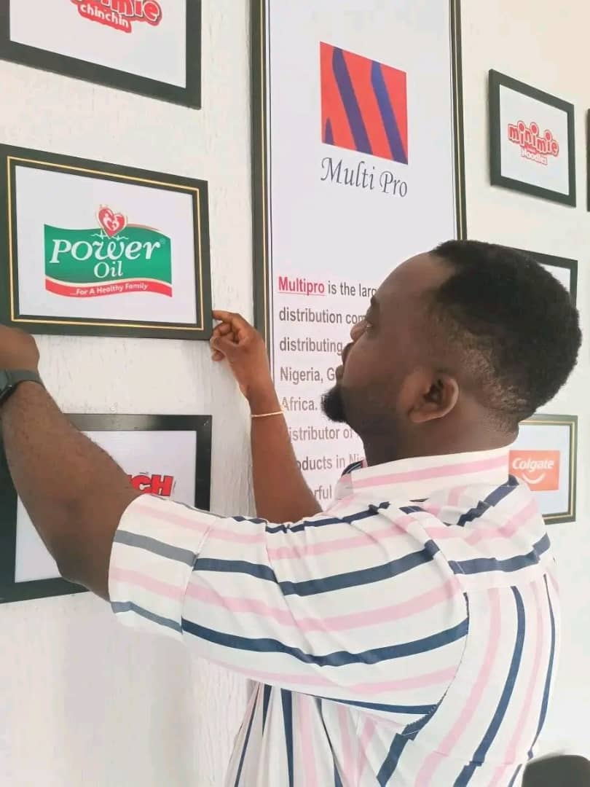
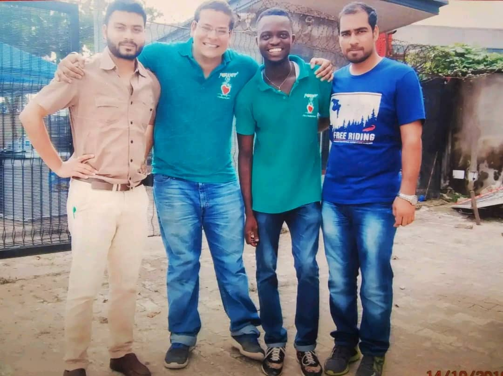
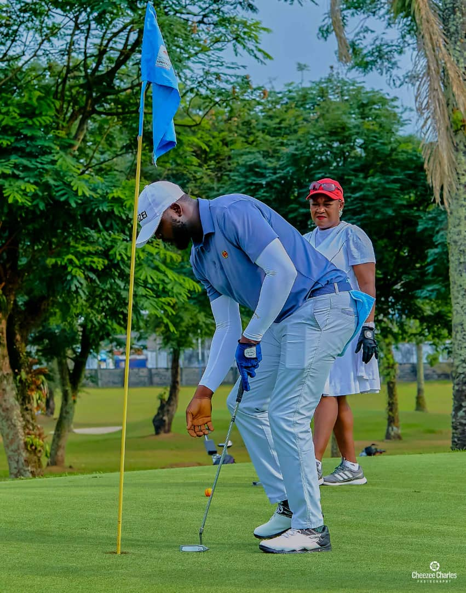
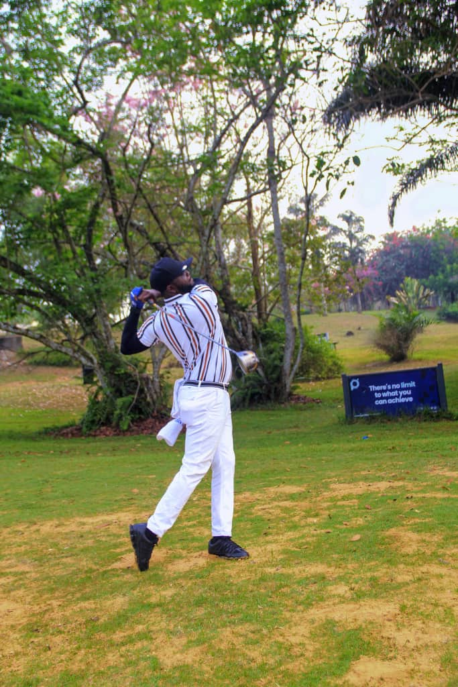
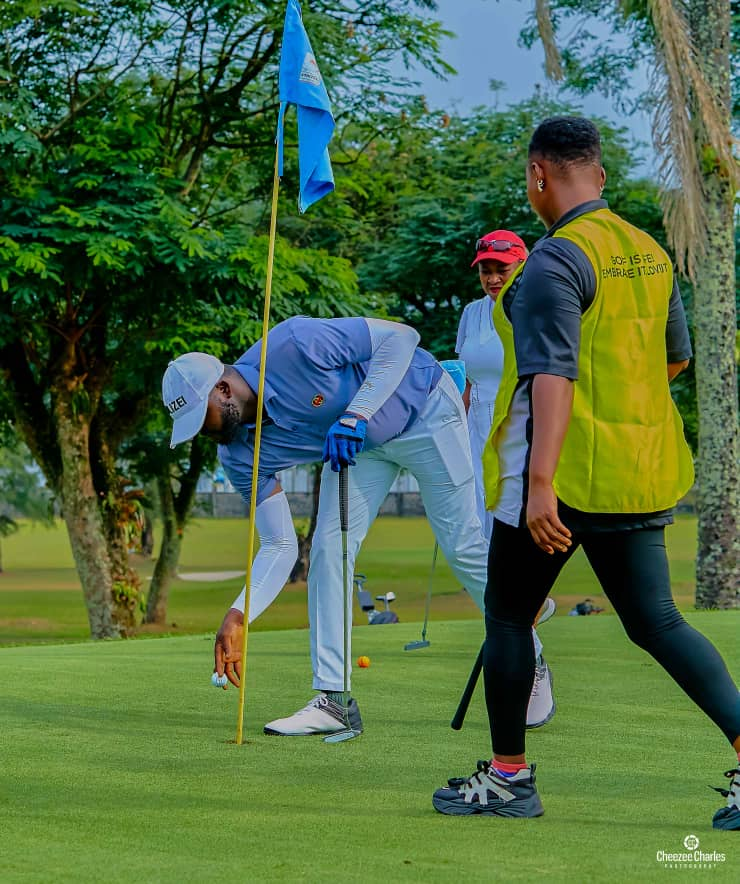

Professional profile of
AKANIMO UDIOK
Akanimo Udiok is a result-driven marketing professional and business administrator with extensive experience in sales, brand development, and market expansion. He hails from Idu Uruan in Uruan Local Government Area in Akwa Ibom State, Nigeria.
He's a graduate of Business Administration and has built a strong career working with different organizations in managerial capacities, where he has demonstrated leadership, strategic planning, and team management skills.
Currently, Akanimo serves as the Area Marketing Manager for Power Oil, overseeing marketing operations across Akwa Ibom State and Cross River State. In this role, he is responsible for driving market growth, managing distribution channels, strengthening brand presence, and building strategic relationships that enhance business performance.
Key Strengths:
- Strategic Leadership
- Market Expansion
- Brand Development
- Entrepreneurial Development
- Business Management
- Sales Growth
- Team Management
THE GROWTH
...from a humble beginning...
Akanimo Udiok’s growth journey is a powerful story of dedication, resilience, and continuous self-improvement. He began his career at Power Oil in a humble role as a marketer and driver, where he gained firsthand experience in product distribution, customer engagement, and grassroots market operations. Through hard work, consistency, and a strong commitment to excellence, he quickly distinguished himself and earned promotion to the role of Sales Representative. In this position, he demonstrated exceptional ability in driving sales, building client relationships, and expanding market reach. His results-driven approach, leadership qualities, and deep understanding of the market paved the way for his rise within the organization. Today, Akanimo serves as the Area Marketing Manager for Power Oil, overseeing marketing operations across Akwa Ibom State and Cross River State. In this capacity, he leads strategic initiatives, manages distribution networks, strengthens brand presence, and drives sustainable market growth. His journey reflects not only professional advancement but also a testament to what determination, discipline, and vision can achieve.

Master on the Course...
Akanimo Udiok is an award-winning golfer known for his precision, discipline, and exceptional focus on the course. His consistent performance and competitive spirit have earned him recognition in various golfing circles, setting him apart as a player of remarkable skill and determination. Beyond his achievements, he embodies sportsmanship, patience, and strategic thinking—qualities that not only define his success in golf but also reflect his excellence in leadership and personal development.


